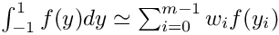

Basis class for all the basic integration rules This basis class is the common class for all numerical integration formulae that approximate the integral . It's a very light class (no variable members) that provides the common interface to all integration rules
A base class for standard quadrature rules. This class provides the common interface to a quadrature rule in the interval computed by the formula  It also provides the containers for nodes and corresponding weights . This is the base class, the derived class constructs the appropriate points and weights
A type trait than checks if your class contains a method called clone() the template parameter. I use it to implement clonable classes which enable the prototype design pattern on a polymorphic family of classes. This is the primary template, which maps to false
A smart pointer that handles cloning for compusing with polymorphic objects. This class implements a generic wrapper around a unique pointer useful to support the bridge pattern. Its role is to ease the memory management of object which are composed polymorphically in a class in order to implement a rule. It is a extensive modification of the class presented by Mark Joshi in his book "c++ design patterns and
derivative pricing", Cambridge Press. This version makes use of std::unique_ptr to ease the handling of memory. It handles memory as a unique_ptr, but implements copy operations by cloning the resource
Class for constructing the distance matrix within statistical units used in the training stage (n_train) and the one to be predicted (n_pred): n_pred distance matrices of dim n_train x n_train
Concrete class for the Functional Mixed Geographically Weighted Regression model, estimating, in order, stationary and non-stationary functional regression coefficients
Concrete class for the Functional Multi-Source Geographically Weighted Regression ESC model, estimating, in order, stationary, station-dependent and event-dependent functional regression coefficients
Concrete class for the Functional Multi-Source Geographically Weighted Regression SEC model, estimating, in order, stationary, event-dependent and station-dependent functional regression coefficients
Computing operators and functional operators in FWR. Wrapping and dewrapping basis expansion coefficients of the functional regression coefficients. Evaluating the latters
Computing the penalization matrix intended as the scalar product within a given order of derivative of a basis system The penalization matrix is intended as a block matrix, in which each block present the above pattern for a given system of basis, if multiple basis systems are present


![$[-1,1]$](form_1_dark.png)
![$y_i\in[-1,1]$](form_3_dark.png)